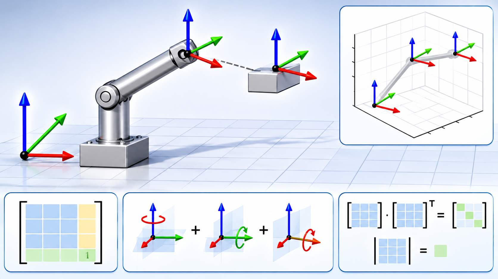
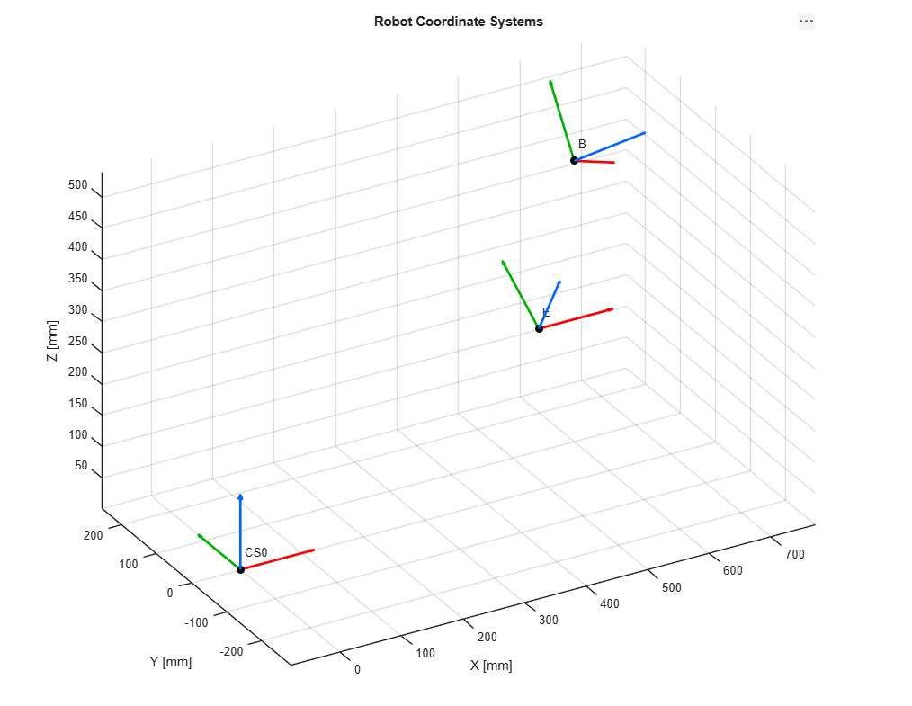
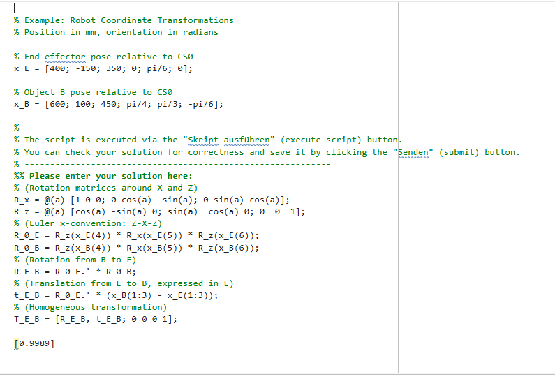
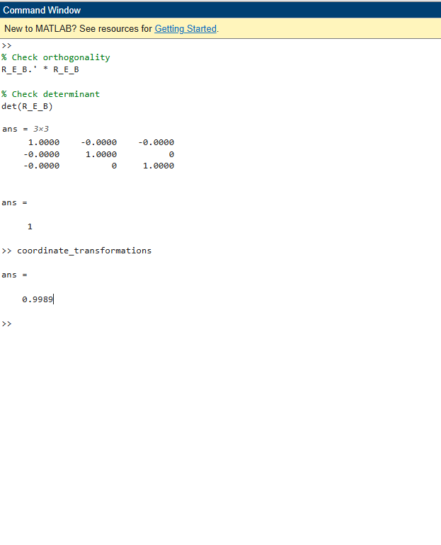

Systemübersicht

Konzeptdarstellung der Koordinatentransformationen in der Robotik (KI-generiert).
1. Projektbeschreibung
In diesem Projekt werden Positionen und Orientierungen von Koordinatensystemen mit MATLAB berechnet und visualisiert.
Ziel ist die Bestimmung der relativen Position und Orientierung eines Objekts B gegenüber dem Endeffektor E.
2. Projektziele
- Berechnung von Rotationsmatrizen
- Transformation von Koordinatensystemen
- Berechnung homogener Transformationen
- Überprüfung der Rotationseigenschaften
- 3D-Visualisierung mit MATLAB
3. Mathematische Grundlagen
Rotationsmatrix
Die relative Rotation zwischen den Koordinatensystemen E und B ergibt sich aus:
R_E_B = R_0_E' * R_0_B
Translationsvektor
Die Position des Objekts B, ausgedrückt im Koordinatensystem E:
t_E_B = R_0_E' * (p_0_B - p_0_E)
Homogene Transformation
Rotation und Translation werden in einer 4x4-Matrix zusammengefasst.
T_E_B = [R_E_B, t_E_B;
0, 0, 0, 1];
4. Mathematische Validierung
Die berechnete Rotationsmatrix wird anhand der folgenden mathematischen Eigenschaften geprüft:
R_E_B.' * R_E_B = I det(R_E_B) = 1
Die Ergebnisse werden numerisch mit MATLAB überprüft.
5. 3D-Visualisierung
Koordinatensysteme CS0, E und B
Darstellung der Positionen und Orientierungen der drei Koordinatensysteme im 3D-Raum.
Die X-, Y- und Z-Achsen werden farblich dargestellt.

Dreidimensionale Visualisierung der Koordinatensysteme CS0, E und B. Die Positionen und Orientierungen wurden mit MATLAB berechnet.
MATLAB-Programmcode

Implementierung der Rotationsmatrizen und homogenen Koordinatentransformationen mit MATLAB.
Mathematische Validierung

Numerische Überprüfung der Orthogonalität und der Determinante der Rotationsmatrix.
6. Projektdateien
MATLAB Source Code
Das MATLAB-Skript enthält die Berechnungen, die Validierung und die 3D-Visualisierung.
MATLAB-Code herunterladen (.m)MATLAB-Quellcode mit Rotationsmatrizen, homogenen Transformationen und 3D-Visualisierung.